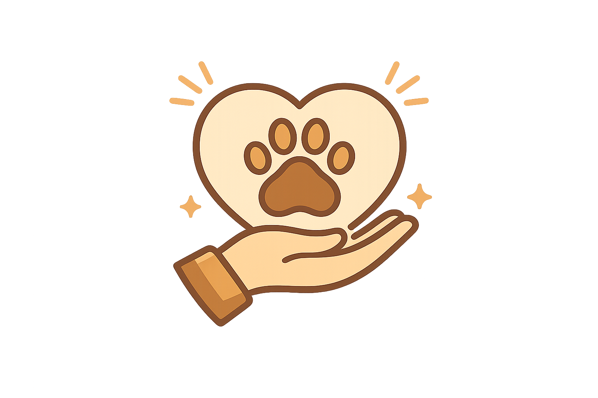
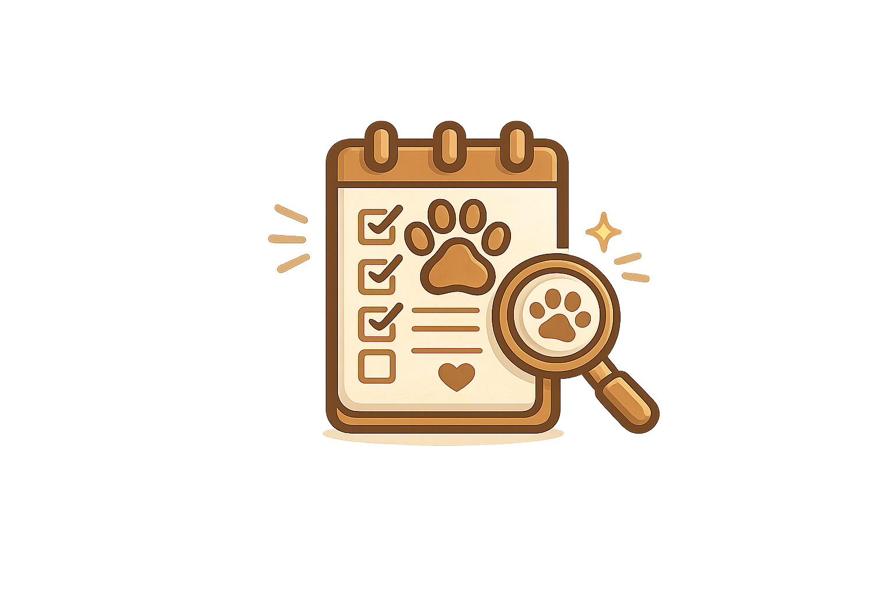
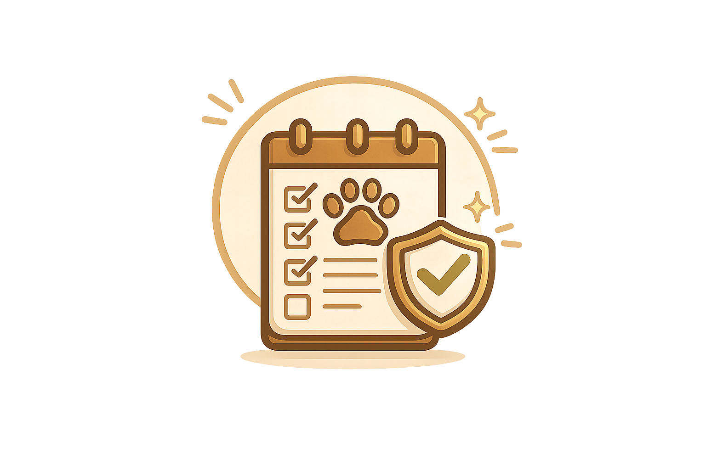

Ignacio Noble
Director general
Todo comenzó con un pequeño grupo de voluntarios que decidió ayudar a animales en situación de calle. Con el tiempo, la organización creció sumando más personas comprometidas con el rescate, cuidado y adopción responsable.

Nos entregamos por completo por el bienestar de cada animal que cruza nuestras puertas.

Mostramos claramente cómo usamos todos nuestros recursos.

Promovemos el cuidado responsable de las mascotas.
Director general
Rescatista
Veterinario
Adopciones
Comunicación
Año de inicio: 2016
Ubicación: Buenos Aires, Argentina
Tipo: ONG sin fines de lucro
Financiamiento: Donaciones y apoyo comunitario